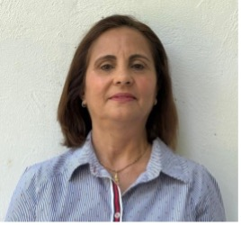

Protecting children, building a nation's futureProteje labarik, harii futuru nasaun nianProteger as crianças, construir o futuro de uma nação
The Children's Future Foundation was established on 18 December 2025 by President José Ramos-Horta to stand with the most vulnerable people in Timor-Leste.Children's Future Foundation estabelese iha loron 18 Dezembru 2025 husi Prezidente José Ramos-Horta atu hamutuk ho ema vulneravel liu sira iha Timor-Leste.A Children's Future Foundation foi estabelecida a 18 de dezembro de 2025 pelo Presidente José Ramos-Horta para estar ao lado das pessoas mais vulneráveis de Timor-Leste.
Empower and protect the vulnerableFó kbiit no proteje ema vulneravelCapacitar e proteger os mais vulneráveis
To empower and protect vulnerable children, youth, and women in Timor-Leste by improving access to nutrition, healthcare, education, and opportunities for personal and professional development.Atu fó kbiit no proteje labarik, joven, no feto vulneravel sira iha Timor-Leste liuhusi hadi'a asesu ba nutrisaun, saúde, edukasaun, no oportunidade ba dezenvolvimentu pesoál no profisionál.Capacitar e proteger crianças, jovens e mulheres vulneráveis em Timor-Leste, melhorando o acesso à nutrição, à saúde, à educação e a oportunidades de desenvolvimento pessoal e profissional.
.jpg)
What we set out to achieveSaida mak ami hakarak hetanO que nos propomos alcançar
- Improve nutrition for children, youth, women, pregnant mothers, and infants in vulnerable communities.Hadi'a nutrisaun ba labarik, joven, feto, inan isin-rua, no bebé sira iha komunidade vulneravel.Melhorar a nutrição de crianças, jovens, mulheres, grávidas e bebés em comunidades vulneráveis.
- Expand access to healthcare services and essential medicines.Haboot asesu ba servisu saúde no aimoruk esensiál.Alargar o acesso a serviços de saúde e a medicamentos essenciais.
- Support access to quality education and academic opportunities at both national and international levels.Apoia asesu ba edukasaun ho kualidade no oportunidade akadémiku iha nivel nasionál no internasionál.Apoiar o acesso a uma educação de qualidade e a oportunidades académicas a nível nacional e internacional.
- Promote vocational and professional training for youth and women.Promove formasaun vokasionál no profisionál ba joven no feto.Promover a formação vocacional e profissional para jovens e mulheres.
- Provide scholarships and educational support for children, youth, and women.Fornese bolsa estudu no apoiu edukasaun ba labarik, joven, no feto.Conceder bolsas de estudo e apoio educativo a crianças, jovens e mulheres.
- Encourage and support female and youth entrepreneurship.Enkoraja no apoia empreendedorizmu feto no joven nian.Incentivar e apoiar o empreendedorismo feminino e juvenil.
- Foster empowerment, inclusion, and sustainable development for vulnerable populations.Hametin kbiit, inkluzaun, no dezenvolvimentu sustentavel ba populasaun vulneravel.Fomentar a capacitação, a inclusão e o desenvolvimento sustentável das populações vulneráveis.
Why CFF was createdTanba sá CFF hariiPorque a CFF foi criada
The problem we addressProblema ne'ebé ami hadi'aO problema que enfrentamos
Too many children in Timor-Leste face hunger, gaps in healthcare, and barriers to education. CFF was created to meet these needs directly, in the communities where they are felt most.Labarik barak iha Timor-Leste hasoru hamlaha, falta saúde, no obstákulu ba edukasaun. CFF harii atu responde nesesidade sira-ne'e diretamente, iha komunidade sira ne'ebé sente liu.Demasiadas crianças em Timor-Leste enfrentam a fome, falhas nos cuidados de saúde e barreiras à educação. A CFF foi criada para responder a estas necessidades de forma direta, nas comunidades onde mais se fazem sentir.
Why children are the focusTanba sá labarik mak fokuPorque as crianças são o foco
Investing in a child's nutrition, health, and learning today shapes the strength of the whole nation tomorrow. Children are where lasting change begins.Investe iha nutrisaun, saúde, no aprendizajen labarik nian ohin loron forma forsa nasaun tomak nian aban-bainrua. Labarik mak fatin ne'ebé mudansa ne'ebé hela nafatin hahú.Investir hoje na nutrição, na saúde e na aprendizagem de uma criança molda a força de toda a nação amanhã. É nas crianças que começa a mudança duradoura.
Our long-term goalsAmi-nia meta narukOs nossos objetivos de longo prazo
A Timor-Leste where every child is well-nourished, healthy, and educated — and where youth and women have real opportunities to lead and to thrive.Timor-Leste ida ne'ebé labarik hotu hetan nutrisaun di'ak, saudavel, no edukadu — no ne'ebé joven no feto iha oportunidade loos atu lidera no atu moris di'ak.Um Timor-Leste onde todas as crianças são bem nutridas, saudáveis e educadas — e onde os jovens e as mulheres têm oportunidades reais de liderar e prosperar.
How our work is organisedOinsá ami-nia servisu organizaComo o nosso trabalho está organizado
1 · Education1 · Edukasaun1 · Educação
- School Feeding Programs — nutritious meals for students.etu nutritivu ba estudante sira.refeições nutritivas para os alunos.
- Graduation Scholarships — helping final-year university students finish their degrees.ajuda estudante universidade tinan ikus atu remata sira-nia grau.a ajudar estudantes universitários do último ano a concluir os seus cursos.
- Food Subsidy Program — support for students from underprivileged families.apoiu ba estudante husi família kbiit-laek.apoio a estudantes de famílias desfavorecidas.
- Global Scholarships — full scholarships at prestigious international universities.bolsa tomak iha universidade internasionál prestijiozu.bolsas completas em prestigiadas universidades internacionais.
2 · Sustainable Development2 · Dezenvolvimentu Sustentavel2 · Desenvolvimento Sustentável
- Market Access — showcasing Timor-Leste's products to the global market via a CFF online portal.hatudu produtu Timor-Leste ba merkadu globál liuhusi portál online CFF.a divulgar os produtos de Timor-Leste no mercado global através de um portal online da CFF.
- Bed & Breakfast — a community-led program bringing rural communities into tourism.programa lidera husi komunidade atu lori komunidade rurál ba turizmu.um programa liderado pela comunidade que integra as comunidades rurais no turismo.
- Renewable Energy — a vision for Timor-Leste fully powered by renewable energy.vizaun ba Timor-Leste ne'ebé uza enerjia renovavel tomak.uma visão de um Timor-Leste totalmente alimentado por energia renovável.
- Digital Payment — promoting digital payments as a tool for rural development.promove pagamentu dijitál nu'udar instrumentu ba dezenvolvimentu rurál.a promover os pagamentos digitais como instrumento de desenvolvimento rural.
3 · Peace & Democracy3 · Dame & Demokrasia3 · Paz & Democracia
- Myanmar Program — advocating the Five-Point Consensus and the release of Aung San Suu Kyi.defende Konsensu Pontu-Lima no libertasaun Aung San Suu Kyi.a defender o Consenso de Cinco Pontos e a libertação de Aung San Suu Kyi.
- ASEAN Centre of Arbitration — positioning Timor-Leste to help resolve regional disputes.pozisiona Timor-Leste atu ajuda rezolve disputa rejionál.a posicionar Timor-Leste para ajudar a resolver disputas regionais.
The people behind CFFEma sira iha CFF nia kotukAs pessoas por trás da CFF
Profiles and photos will be added as the foundation finalises its team.Perfíl no foto sei aumenta bainhira fundasaun finaliza nia ekipa.Os perfis e as fotografias serão acrescentados à medida que a fundação finaliza a sua equipa.
.jpg)
H.E. José Ramos-Horta
Founder · President of Timor-LesteFundadór · Prezidente Timor-LesteFundador · Presidente de Timor-Leste